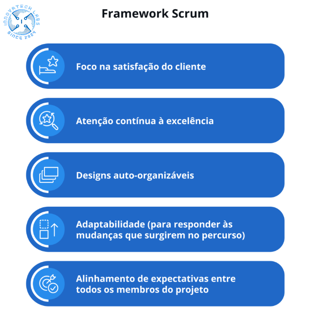

1.0 - Scrum Framework
Um framework Scrum é uma estrutura organizacional que define papéis, eventos, artefatos e regras que guiam o processo de desenvolvimento de produtos. No contexto do Scrum, um framework é uma estrutura flexível que fornece diretrizes claras sobre como as equipes devem colaborar e organizar seu trabalho para alcançar seus objetivos.
1.1 - A origem do Scrum-Framework
Você sabia que o termo Scrum, na verdade, saiu do esporte? Ele ganhou o mundo dos projetos justamente pela semelhança de contextos. A palavra tem origem no jogo de rugby. O Scrum é um método para reiniciar jogadas e colocar a bola novamente em campo, normalmente, na cobrança de penalidades. Para entender melhor: é o momento em que os jogadores estão de cabeça para baixo e um time “empurra” o outro, na disputa de bola. Segundo os pais desse framework, os times de projetos que entregam resultados melhores, movem-se como um time de rugby: em bloco, unidos, rumo a um objetivo comum.
1.2 - O Scrum como conhecemos hoje
Hoje, Scrum é um framework simples para trabalhar com projetos complexos. O termo Scrum com foco no desenvolvimento de softwares foi criado nos anos 1990. Esse modelo, assim como extreme programming, está muito ligado ao universo tecnológico, mas tem conceitos que podem ser amplamente capilarizados.
2.0 - Os pilares do Scrum
Os 3 pilares do Scrum são a transparência, a inspeção e a adaptação. Executar as tarefas a partir desses valores é essencial para gerenciar todas as etapas dos projetos e garantir os melhores resultados com o menor esforço.
2.1 - Transparência
A transparência é o primeiro pilar. Isso significa que todas as partes envolvidas devem estar cientes sobre todas as etapas, de forma clara e bem definida. Isso vale para as expectativas em relação ao produto final, prioridades de entrega, comunicação verbal e escrita durante o desenvolvimento… Todos precisam se enxergar dentro do projeto, de maneira consistente, e, como o nome indica, transparente.
2.2 - Inspeção
A inspeção do trabalho visa acompanhar o desenvolvimento e status de todas as etapas. Ao entender em que ponto estão as execuções de cada pessoa do seu time, é possível visualizar impactos e pensar em ajustes. A frequência de inspeções deve ser suficiente para garantir a qualidade total da entrega final.
2.3 - Adaptação
Entre as inspeções de ciclos no framework Scrum, é possível adaptar o escopo do projeto às necessidades da empresa. Dessa forma, o projeto pode ser concluído com resultados diferentes daqueles imaginados no planejamento, desde que sejam entendidos como mais produtivos.
3.0 -Desenvolvimento ágil de processos em ciclos
O Scrum se baseia em ciclos — chamados de sprints — e que, a partir de um conjunto de práticas, valores e pilares básicos, consegue adaptar modelos de gestão de projetos que sejam, de fato, relevantes para seu negócio. O Sprint é um período de tempo pré-determinado dentro do qual a equipe completa conjuntos de tarefas do Backlog. O ciclo do Sprint representa uma série de aprendizados e evoluções que podem (e devem) ser utilizados na próxima fase do projeto, de forma a otimizar processos. O período de tempo desse ciclo depende das necessidades da equipe, mas duas semanas é um tempo bastante comum. Vale dizer, ainda, que a dinâmica básica desse framework segue a base 3-5-3, que são, basicamente, os 3 papéis de um time, os 5 eventos de um projeto e os 3 artefatos para sua execução.
3.1 - Os artefatos do Scrum
Os artefatos do Scrum são ferramentas que garantem a execução do projeto com base nos seus pilares. São eles:
3.2 - Product Backlog
Uma espécie de lista de requisitos. A prática de mapeamento de histórias (USM), com documentação de processos para entendimento compartilhado do todo deve fazer parte desse artefato. O Product Owner é o responsável por incluir itens nessa lista.
3.3 - Sprint Backlog
Lista de requisitos para o time de desenvolvimento, criada a partir de prioridades do artefato anterior. A equipe pode elencar a lista de histórias do Product Backlog a partir da seguinte orientação: Fazer o mapeamento visual dessas histórias, de preferência em cartões. Atribuir qual é o esforço necessário para a realização dessas histórias. Atribuir quais são os esforços para a realização em equipe dessas histórias. É importante ressaltar que a própria equipe deve escolher quantos itens serão trazidos para esse artefato, já que o comprometimento de implementação será dela.
3.4 - Incremento
Um artefato que surge como resultado do trabalho de cada Sprint. Ainda que não seja um produto final, deve ter capacidade de gerar valor para seu cliente.
3.5 - Release Burndown
Um gráfico que acompanha o progresso do time em comparação ao que foi planejado. No eixo horizontal do gráfico, devem estar os Sprints e, no vertical, a quantidade de trabalho que falta para cada um ser concluído. Essa medida pode ser avaliada em dias, pontuação de histórias, etc.
4.0 Eventos Scrum

Um dos objetivos do Scrum é aproveitar melhor o tempo (lembre-se do “ágil”). Por isso, otimizar os encontros da equipe é uma fórmula básica. Ao seguir um guia de eventos, a equipe trabalha com mais assertividade e já sabe, desde o início, quando será o momento de propor adaptações e fazer trocas com outras pessoas.
4.1 - Sprint Planning Meeting
Aqui, acontece o planejamento de cada sprint. Deve ser acompanhado de perto pelo Scrum Master, a fim de garantir que não se gaste mais de 8 horas da Sprint com esse evento. Essa reunião é dividida em duas partes, sendo que na primeira, o Product Owner vai explicar e esclarecer dúvidas sobre os itens que estão no backlog. Na segunda, o time estimará o tamanho do item do backlog e irá decompor em ações que precisam ser feitas para entregar algum valor ao cliente.
4.2 - Daily Scrum
Reunião diária para alinhamento. A ideia é de responder a três perguntas básicas: O que eu fiz desde a última reunião? O que pretendo fazer até a próxima reunião? Existe algum impedimento? Com isso, pontuam-se possíveis problemas e o que está planejado para as tarefas do dia. Nesse ponto, o time pode levantar dificuldades que podem ser resolvidas pelo Scrum Master.
4.3 - Sprint Review Meeting
Esse é o evento de revisão do sprint. É o momento em que o time verifica se o que foi feito está de acordo com os requisitos do produto e, se necessário, atualizar o backlog.
4.4 - Sprint Retrospective
Reinício de sprint, com base em tudo que foi aprendido no ciclo anterior. Quais foram os ganhos? Como essa experiência pode incrementar os próximos ciclos?
5.0 Como trabalhar com o framework Scrum?
Qualquer negócio com projetos complexos e produtos concretos em desenvolvimento podem se beneficiar com o Scrum. Pode ser a criação de um novo programa, a criação de um novo acessório ou até uma campanha de vendas. O Scrum é uma ferramenta a ser considerada para organizar os times e fazer o trabalho em equipe ser realizado com mais agilidade. Para começar a implementá-la, é importante pensar em um esquema básico para seu negócio. Estude sobre esse framework. Escolha um Product Owner, ou seja, a pessoa responsável pela tomada de decisão. defina, também, os outros papéis e forme a equipe ideal para um projeto. Faça o Backlog, ou seja, a lista de tarefas, e quais delas devem ser concluídas no primeiro Sprint. Comece a execução, sempre com base nos eventos do Scrum, para acompanhar de perto a evolução do projeto. Depois, é hora de rever processos, entender quais os pontos de melhoria e começar tudo de novo.
6.0 Auxilio do framework scrum na gestão de projetos
O Scrum contribui significativamente para otimizar os processos de negócios, especialmente quando pensamos nos desafios relacionados à sua natureza horizontal. A Gestão de Processos de Negócio (Business Process Management, comumente apresentada pela sigla BPM) é uma disciplina gerencial que estuda as melhores práticas de gerenciamento para mapear processos e identificar gaps no negócio. O framework Scrum também pode ser aplicado aqui, no chamado BPM Ágil. Os processos são integrados e funcionam a partir da modelagem de processos, com mais dinâmica e rapidez. De maneira geral, os processos são adaptados às necessidades dos projetos, de forma a garantir mais simplicidade e eficiência nas entregas. Com o trabalho em ciclos, os Sprints do Scrum, alinhados aos ciclos de melhoria do BPM, a empresa apresenta mais resultados em menos tempo. A ideia é manter o foco em entregas de valor, testes rápidos (MVP) e ser constantemente avaliado pelo cliente, mantendo, assim, o alto nível de excelência.